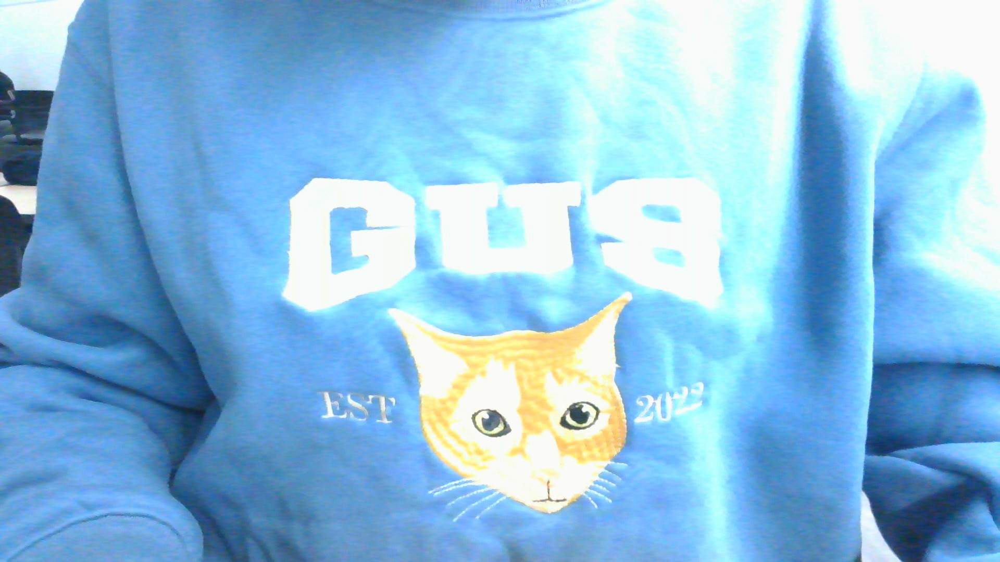

My cat Gus is my favorite animal to ever walk this planet. We found her in 2022 in the woods behind my grandma's house. We named her Gus before we knew she was a girl, but I am very happy that is her name. She is just a funny silly cat. Sadly, I do not have any photoes of her on my computer, but luckily, I am wearing a shirt with her face on it.
